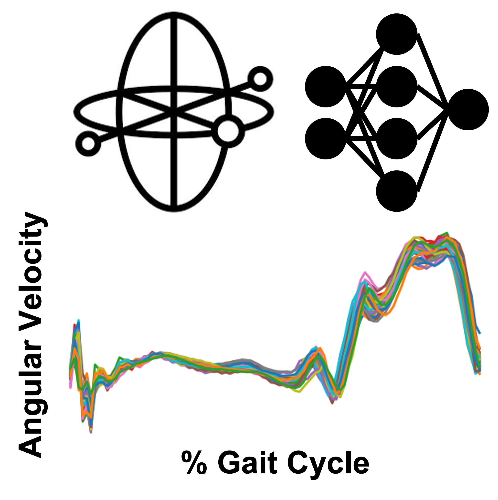
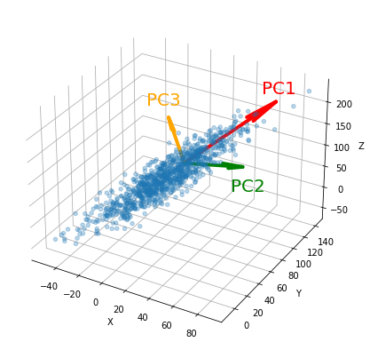

Thinking and Writing
I spend a lot of my time thinking about new ideas. I like to learn new things, research topics, and ask a lot of questions. Sometimes, I put my thoughts on paper in my blog.
PhD Student at the University of Masachusetts Amherst

Thinker | Creator | Learner
Interested in human performance, wearable technology, machine learning, and data science.
I spend a lot of my time thinking about new ideas. I like to learn new things, research topics, and ask a lot of questions. Sometimes, I put my thoughts on paper in my blog.
I am interested in human performance, wearable technology, and data science. I believe that wearable tech can help humans unlock optimal human performance, and that data science techniques are necessary for understanding and modeling the complex behavior of humans.
Starting grad school sparked my interest in coding. I have experience with python, R, matlab, and now some HTML from building this website. I put most of my code on my Github.
I've always believed work life balance is key for success. I'm an avid fan of the outdoors, whether I'm hiking with my dog Bailey, snowboarding, fly fishing, or playing golf with some friends. I also believe that exercising and mental health go hand in hand, so I spend a lot of my free time at the gym or running.

Cross validating machine learning models by leaving out all observations from a single subject. A great approach for small sample sizes and multiple observations per sample. This post explains the approach and how to implement it from scratch in python.

Wearable technology such as inertial measurement units are useful for measuring movement. In this project, I used an open source dataset with signals derived from inertial measurement units to classify walking gait speed with a deep learning model.

Early detection of cardiovascular disease could greatly reduce the probability of mortality. In this project, I explore how deep learning can be used to detect abnormal hearbeat signals.

An application of machine learning methodologies including dimensionality reduction and classification models to analyze the complex behavior of musculoskeletal injuries with a "systems theory" approach.
Last Updated: January 18, 2023